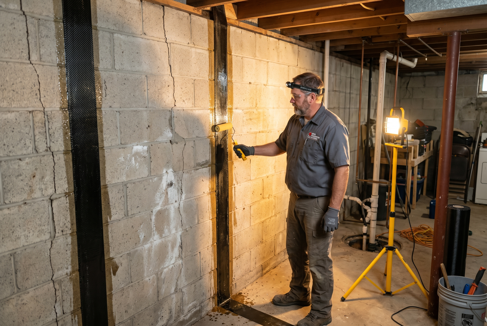
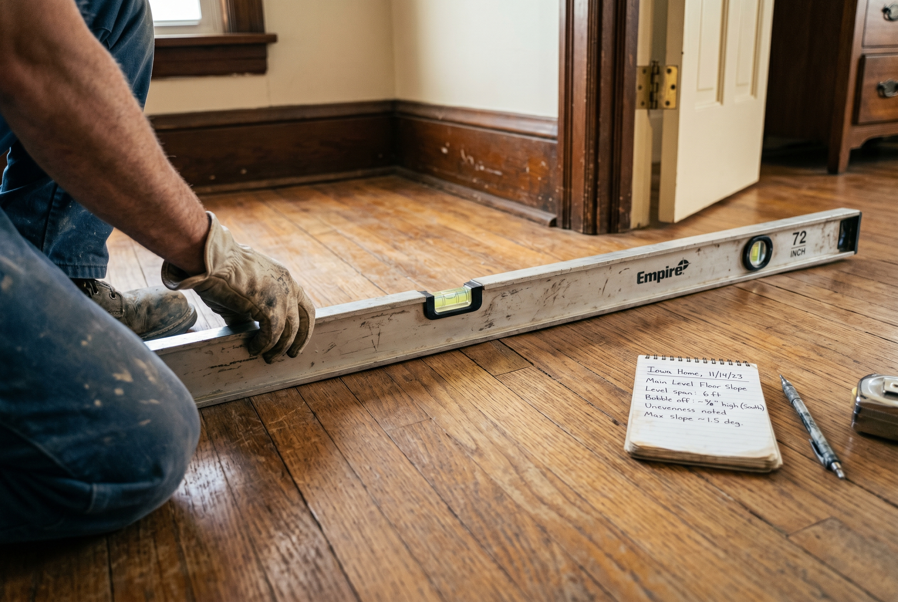

Published November 2, 2026 • By Black Ridge Contracting
Every Iowa basement has cracks. Some of them mean nothing. Some of them mean tens of thousands of dollars of work. The difference between the two is what every homeowner ends up needing to figure out at some point, usually when the basement floods or when they're trying to sell.
Here is how we tell the difference, and what each category actually costs to fix.
The Three Types of Foundation Cracks
Vertical settlement cracks. Run up and down, usually under a quarter inch wide, often in a roughly straight line from the floor toward the ceiling. These are normal in Iowa homes. They happen because concrete shrinks as it cures and because the foundation has settled slightly over decades. Cosmetic. Seal them to keep water out and move on.
Horizontal cracks. Run side to side, usually following a mortar joint in a concrete block wall. These are not cosmetic. They indicate external pressure pushing the foundation wall inward. Iowa clay soil expands when saturated and applies force on basement walls. Horizontal cracks need professional attention regardless of width.
Stair step cracks. Diagonal cracks that follow the corner pattern of concrete block, stepping up and across the wall. These usually indicate active settlement at one corner of the foundation. Need professional assessment, especially if growing.
Cosmetic Cracks: What to Actually Do
If your crack is vertical, under a quarter inch wide, and hasn't changed in 6 months, it's cosmetic. The right move:
- Measure and mark the width with a pencil. Note the date.
- Seal with a polyurethane crack injection kit ($30 at a hardware store) or have a contractor handle it for $400 to $800.
- Check the mark every 6 months. If it grows visibly, escalate.
This is not foundation repair. This is foundation maintenance. Don't let a contractor sell you a $25,000 system for a cosmetic crack.

Real Problems: When You Need Actual Repair
The actual signs that your foundation needs real work:
- Horizontal cracks at any width. External pressure is pushing inward. Untreated, the wall eventually fails.
- Bowed walls. Stretch a string from corner to corner along a basement wall. If the wall bows in by more than an inch at the middle, you have active movement.
- Vertical cracks growing visibly. A crack that was a quarter inch last spring and is now half an inch is active.
- Multiple cracks in a coordinated pattern. Five cracks all stepping diagonally in the same direction usually indicates a settlement problem at one corner.
- Sloping main floor. Set a long level across the main floor. More than an inch of slope over ten feet usually means structural support has shifted.
- Sticking doors that recently got worse. Doors that bind, especially upstairs, indicate frame movement caused by foundation movement.
- Wet basement after a normal rain. Water finding paths through cracks indicates active failure of the waterproofing.

What Real Repair Looks Like
The right repair depends on what failed.
Bowing or cracked block walls from external pressure. Carbon fiber straps bonded to the wall with epoxy at regular intervals. Stabilizes the wall and prevents further bowing. $500 to $900 per strap. Most projects need 4 to 8 straps. Total $2,000 to $7,000.
Severe wall failure or active inward movement. Steel I-beams installed vertically along the wall and anchored top and bottom. More expensive than carbon fiber but provides stronger correction. $700 to $1,200 per beam.
Settlement at one corner. Helical piers installed under the affected corner to transfer the load to stable soil deeper down. $1,500 to $2,500 per pier. Most projects need 4 to 12 piers. Total $6,000 to $30,000.
Water intrusion at the cold joint. Interior drain tile and sump pump system. Catches water before it gets into the basement and pumps it out. $5,000 to $9,000.
Complete foundation failure. The wall is pushed in beyond what straps or beams can correct, or there's structural damage to the home above. Full foundation reconstruction starting around $35,000 and going up fast.
The Scams to Watch For
Foundation contractors range from honest to predatory. The scams to know:
- The $30,000 system sold for a cosmetic crack. If a contractor wants to install a full waterproofing system for a vertical hairline crack, get a second opinion.
- The "lifetime warranty" with fine print. Lifetime warranties on foundation work are common but often don't survive the company going out of business. Verify the company's track record.
- Fear-based selling. Honest contractors explain the problem and the options. Predatory ones tell you the house will fall down next month.
- Inspections that always find work. If a contractor offering free inspections has never told a homeowner the foundation is fine, that's a sales operation, not an inspection.
How to Get an Honest Assessment
The right move is to get two independent assessments before any major foundation work. Both contractors should look at the same conditions. If they recommend wildly different solutions, get a third opinion or call a structural engineer for $400 to $700 to get a written report you can take to bid.
At Black Ridge Contracting we offer free foundation walkthroughs across Central Iowa. We'll tell you honestly whether what you're seeing is cosmetic, worth monitoring, or needs real work. See our services or call (515) 219-4654.
Frequently Asked Questions
Vertical cracks under a quarter inch are usually settlement and cosmetic. Horizontal cracks indicate soil pressure and are a real problem. Cracks growing visibly are active.
Cosmetic crack repair $400 to $1,500. Carbon fiber straps $500 to $900 each. Helical piers $1,500 to $2,500 each. Waterproofing systems $5,000 to $9,000.
Not necessarily. Most cracks are cosmetic. Repair is needed for horizontal cracks, growing cracks, bowed walls, or sloping floors.
Cracked or bowing concrete block walls from Iowa clay soil pressure. Carbon fiber straps are the standard fix.